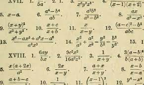

In my oppinion algebra is fun at times but mostly difficult because be learn things really fast and its hard to get the hang of it when we only have a day to learn one subject. Although i feel algebra is important i think we could slow down a bit because we are basicly learning 3 grade levels of math in one year because we didnt know how to do 7th and 8th grade math and now were on 9th so since we already got past 2 grades i think we could slow down a bit and take a break from non stop work.
From: Flickr Taken by: Flickr